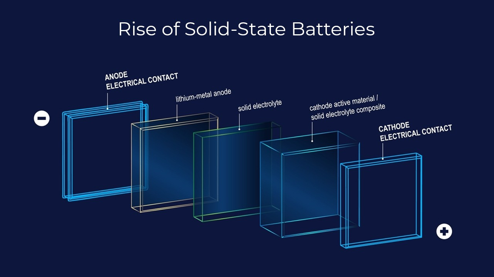
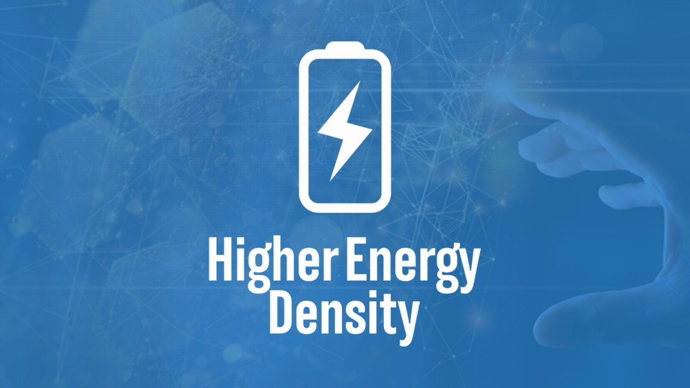
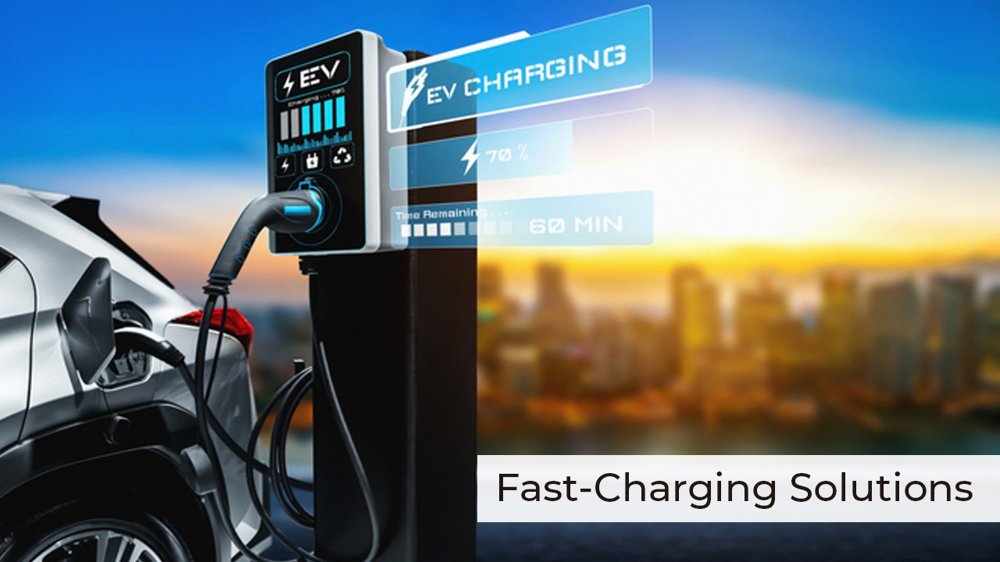
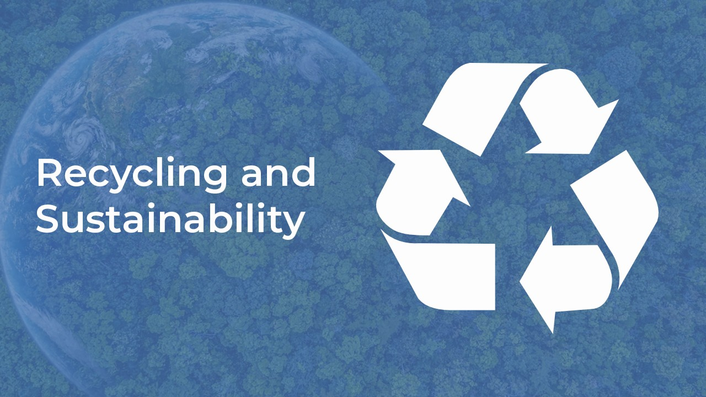

Electric vehicles are becoming increasingly popular as people become more aware of the impact of traditional combustion engines on the environment. However, one of the biggest challenges facing the electric vehicle industry is the development of efficient and reliable battery technology. In recent years, there have been significant advancements in solid-state battery technology, which is revolutionizing the electric vehicle industry.
The world of electric vehicles (EVs) is rapidly evolving, and battery technology is at the forefront of this transformation. From solid-state batteries to emerging battery chemistries and fast-charging solutions, the industry is making significant strides toward a more sustainable and efficient future.
The Rise of Solid-State Batteries

Solid-state batteries are one of the most promising advancements in battery technology. Unlike traditional lithium-ion batteries, which use liquid or gel electrolytes, solid-state batteries use solid electrolytes, which offer several advantages. Solid-state batteries are safer, more energy-dense, and have a longer lifespan than lithium-ion batteries. They also have the potential to charge faster and reduce the need for frequent charging.
Several companies are investing in solid-state battery technology, including Toyota Motor Corporation , BMW Group , and Volkswagen . Toyota plans to launch electric vehicles with solid-state batteries by 2025, while BMW is working on developing a solid-state battery with a range of up to 600 miles. Volkswagen is also exploring solid-state batteries as part of its goal to become carbon-neutral by 2050.
In addition to solid-state batteries, researchers are exploring emerging battery chemistries as alternatives to traditional lithium-ion batteries. Lithium-sulfur and lithium-air batteries are two promising candidates. Lithium-sulfur batteries have the potential to be cheaper, lighter, and more energy-dense than lithium-ion batteries. Meanwhile, lithium-air batteries have the potential to offer even higher energy density, which could lead to longer driving ranges.
However, there are still several challenges that need to be addressed before these emerging battery chemistries can be commercialized. For example, lithium-sulfur batteries suffer from low cycle life and poor stability, while lithium-air batteries face challenges related to their low efficiency and high sensitivity to moisture.
Improving Energy Density

Another area of focus in battery technology is enhancing energy density. Higher energy density means longer driving ranges and reduced need for frequent charging. One way to achieve this is by using silicon anodes instead of graphite anodes in lithium-ion batteries. Silicon anodes can store up to ten times more lithium ions than graphite anodes, which could significantly increase energy density.
Other approaches to enhancing energy density include using nickel-rich cathodes and developing advanced electrolytes. Several companies, including Tesla and Panasonic , are investing in these technologies to improve the performance of their electric vehicles.
Fast-charging Solutions

Fast-changing technologies are also making significant strides in the electric vehicle industry. Ultra-fast chargers and high-power charging networks are making it more convenient and efficient for electric vehicle owners to charge their vehicles on the go. For example, Tesla Energy network can provide up to 170 miles of range in just 30 minutes of charging.
However, fast-charging technologies also face challenges related to their high power demands and potential impact on battery life. Researchers are working on developing solutions to address these challenges and make fast charging even more accessible and efficient for electric vehicle owners.
Recycling and Sustainability

Finally, battery recycling and sustainable practices are crucial for minimizing the environmental impact of electric vehicles. As the demand for electric vehicles grows, so does the need for responsible end-of-life management of batteries.
Several companies, including Tesla and BMW, have implemented battery recycling programs to recover valuable metals and reduce waste. In addition, sustainable practices such as using renewable energy sources for charging and implementing circular economy principles can further reduce the environmental impact of electric vehicles.
In conclusion, the advancements in battery technology are revolutionizing the electric vehicle industry and paving the way toward a more sustainable and efficient future. From solid-state batteries to emerging battery chemistries, enhancing energy density, fast-charging solutions, and sustainable practices, the industry is making significant strides toward a greener future.
Knowledge is power, and it's our goal to empower you with the knowledge you need to use batteries safely and efficiently.
Thank you for being part of our community, and stay tuned for more valuable insights in our future newsletters!